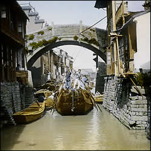

First canal lock.The first canal lock appeared in A.D. 984. A canal lock allows you to move either up or down a level in a canal. It has two gates; the boat enters through one gate which then closes behind it. The water level than rises or falls to the same level as the water outside the second gate. 
City canal with river traffic
The invention of the canal lock meant the canal system in China could be expanded greatly over all sorts of terrain. |